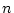
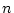

Once data has been gathered, and features have been extracted from the
data, GT k must be trained. The first step is to create an HMM layout
that the training will be based on. GT
k must be trained. The first step is to create an HMM layout
that the training will be based on. GT k provides a tool to assist in the
creation of the HMM. Next, GT
k provides a tool to assist in the
creation of the HMM. Next, GT k must be informed what gestures should
be recognized. This is specified in the form of a simple grammar. The
training process then involves labeling examples from the training set
of data with the gestures that they belong to. GT
k must be informed what gestures should
be recognized. This is specified in the form of a simple grammar. The
training process then involves labeling examples from the training set
of data with the gestures that they belong to. GT k provides automatic
and assisted labeling, depending on the data. After the data has been
labeled, GT
k provides automatic
and assisted labeling, depending on the data. After the data has been
labeled, GT k automatically trains the HMM, preparing it for
recognition.
k automatically trains the HMM, preparing it for
recognition.
Once the HMM has been trained, GT k validates the model using one of
several methods, such as cross-validation or leave-one-out
validation. This validation process gives an indicator of how accurate
the model is likely to be when using real data. If the user is not
satisfied with the results, it is a simple matter to try a different HMM
layout to see if it improves results.
k validates the model using one of
several methods, such as cross-validation or leave-one-out
validation. This validation process gives an indicator of how accurate
the model is likely to be when using real data. If the user is not
satisfied with the results, it is a simple matter to try a different HMM
layout to see if it improves results.
When training is completed to the user's satisfaction, GT k is ready to
perform gesture recognition. Data is provided in the same form as the
training data, and GT
k is ready to
perform gesture recognition. Data is provided in the same form as the
training data, and GT k will return the most likely (or  most
likely) gestures. The user can then act on these results in the desired
manner.
k will return the most likely (or  most
likely) gestures. The user can then act on these results in the desired
manner.